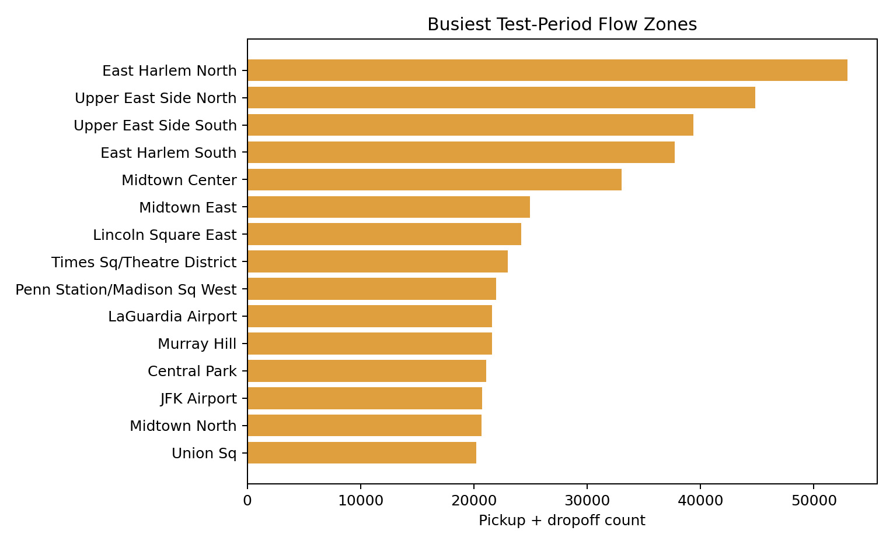
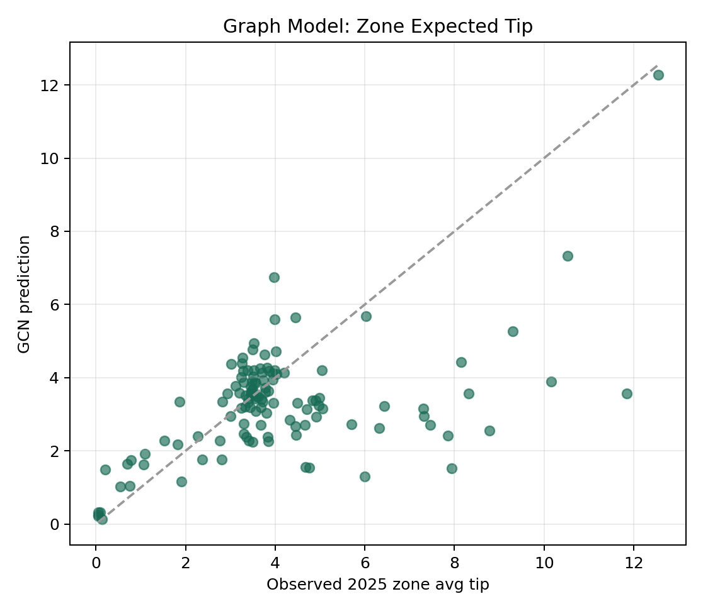
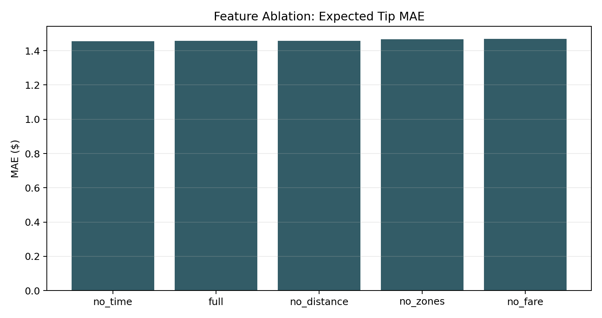
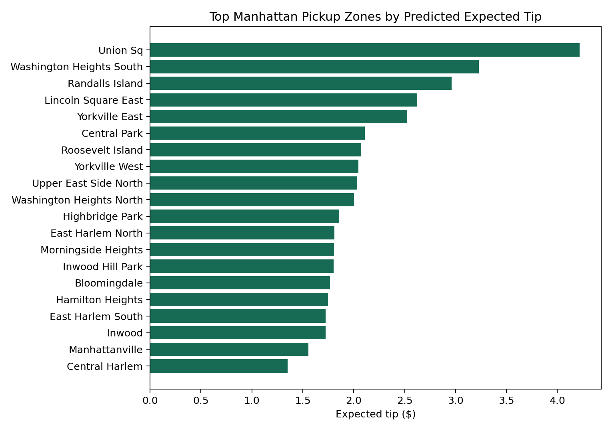

Tip or Skip: NYC Taxi Tipping Prediction & Tip Simulation
An end-to-end ML system for predicting whether a rider will tip and estimating the tip amount distribution, built on NYC TLC Yellow and Green taxi records from 2024–2025.
Why is the problem you are trying to solve interesting or important?
According to data, taxi drivers earn about $16–26/hr, or around $33,000 to $55,000 a year. Their income is heavily dependent on this hourly income; as a result, drivers can work up to 60 hours a week. Furthermore, they often face the burden of work costs such as gas, vehicle leasing, and more. Thus, tipping is crucial to the trip payout for a driver.
Naturally, drivers with more experience in higher-demand areas earn the most. Instead of roaming around, going from pickup to dropoff to pickup again, drivers can utilize our tool for predictable tip outcomes. For example, they may leverage our map to plan routes. Rather than dropping off and picking up in a low-tipping-rate area, they can move to the next best area before picking up. This implies a better experience for customers as well. Drivers in higher tip areas may be discouraged from leveraging bad practices to increase their payouts from a trip, such as slow driving or longer routes.
What is the history of the ideas you explored? Include a careful literature review.
To start, we used a linear hurdle model. Specifically, the model uses
logistic regression to predict tip_given, then ridge
regression on log_tip_amount for trips that received a
tip. This was the baseline model that we hoped to beat.
We moved on to a Histogram-Based Gradient Boosting hurdle model, as a tree model would be a natural fit for our mixed feature data. This actually did end up being the strongest model, so it is the one included in the app.
Next is a Tabular Transformer with a Mixture Density Network head, where each trip feature is treated as a token passed through self-attention. This provides a Gaussian mixture distribution for tips, which then allows us to determine uncertainty and risk behind our predictions.
Our initial research focused on these sources and data:
Sources: NYC TLC Trip Record Data for Yellow and Green Taxi Trip Records (PARQUET), monthly files 2024–2025 (nyc.gov/site/tlc); NYC Taxi Zones dataset (data.cityofnewyork.us); Bishop, C. M. Mixture Density Networks. Aston University technical report, 1994; Huang, X. et al. TabTransformer: Tabular Data Modeling Using Contextual Embeddings. 2020; Guo, C. et al. On Calibration of Modern Neural Networks. ICML, 2017; Kipf, T. N. and Welling, M. Semi-Supervised Classification with Graph Convolutional Networks. ICLR, 2017; Hochreiter, S. and Schmidhuber, J. Long Short-Term Memory. Neural Computation, 1997; Hu, E. J. et al. LoRA: Low-Rank Adaptation of Large Language Models. 2021.
What prior work is most similar to yours? If your work is original, explain what makes it original.
There are certainly other existing tip maps, but the information provided is often limited. Some examples of prior work includes a map of tip to trip duration ratio in NYC. One differentiates dropoff and pickup tip rates.
Our work is certainly not the first or last as far as tipping maps go, but our app is original in many ways. Specifically, we offer predictions based on a user's designated parameters, which no map offers let alone an app. Furthermore, our tree model is able to consider many features, whereas other maps are limited to some. Moreover, we provide a better idea of uncertainty behind our predictions, whereas many maps fail to even consider probability in the first place.
Implementation
We have a deployed Gradio app with a reusable artifact pipeline, so
the project is a working system rather than only a notebook. The
runtime app is app.py. It builds the Hugging Face Space
interface, loads the saved artifacts, and connects each user input to
the same model files and summary tables used in the report. The data
processing and original runtime model utilities are handled by
pipeline.py, while the final dataset loader, feature
encoders, baseline models, Transformer-MDN, experiment code, graph
model, sequence model, and driver-copilot helpers live in
src/tip_or_skip/ and scripts/. The app does
not retrain models during deployment. Instead, it loads precomputed
outputs from artifacts/, including the final boosted tree
hurdle model, Transformer-MDN files, report tables, zone risk tables,
calibration bins, ablation results, sequence metrics, graph metrics,
and driver LLM evaluation files.
The app is organized around the main ways someone would inspect the project. The prediction view lets a user define a ride by taxi type, pickup and dropoff zone, pickup time, fare, distance, duration, vendor information, passenger count bucket, rate code, and store-and-forward flag. It then returns the probability of a recorded electronic tip, the predicted tip amount if a tip happens, and the expected tip value for that ride. The Model Lab compares the final models and includes a same-ride check, where the boosted tree hurdle model and the Transformer-MDN are run on identical ride inputs. This matters because the comparison is about the models, not about two different example rides. The Experiment Lab shows the supporting work behind the final system, including feature ablations, probability calibration, hourly sequence forecasting, graph-zone experiments, and driver-copilot checks. The map and shift planner translate zone-level model outputs into a driver-facing view, so a taxi driver can compare pickup areas by expected tip, downside risk, and observed volume. Ask The Data and Driver Copilot answer grounded questions from the saved metrics, zone risk tables, and model outputs, so the natural-language parts of the app explain project evidence rather than inventing new results.
Methods
Our main prediction task is a two-stage hurdle problem because tipping
has two parts. First, the model needs to estimate whether a ride gets
a recorded electronic tip. Second, if the ride is likely to get a tip,
the model needs to estimate how large that tip may be. In notation,
the first stage is P(tip_given = 1 | x) = f_class(x),
the second stage is
E(tip_amount | tip_given = 1, x) = f_amount(x), and the
final expected value is
E(tip_amount | x) = P(tip_given = 1 | x) * E(tip_amount | tip_given
= 1, x). This final value is what the app compares across rides and zones.
We started with a linear hurdle baseline. It uses logistic regression
for tip_given and ridge regression for positive
log_tip_amount, giving us a simple reference point that
is easier to interpret. We then trained a histogram gradient boosting
hurdle model because the data mixes numeric variables, categorical
zone information, fares, distances, time features, taxi type, and
service-zone details. The boosted tree became the main point
prediction model because it handled those nonlinear interactions best.
In the final comparison, it had the lowest expected-tip MAE at about
$1.45 and a ROC-AUC of about 0.771 for the tip/no-tip stage.
We also trained a tabular Transformer with a Mixture Density Network
head. This model treats trip features as learned inputs and predicts a
distribution over positive tip amounts instead of only a single
average. The distribution is
p(tip_amount | tip_given = 1, x) = sum_k pi_k(x) * Normal(mu_k(x),
sigma_k(x)), and its expected-tip form is
E_MDN(tip_amount | x) = P(tip_given = 1 | x) * sum_k pi_k(x) *
exp(mu_k(x) + 0.5 * sigma_k(x)^2). The Transformer-MDN was not the strongest point predictor, with
expected-tip MAE around $2.34, but it is useful because it gives a
range of possible positive tip amounts for the same ride. That matters
when a driver cares about downside risk, not just the average.
We also tested whether the project could go beyond scoring one ride at a time. The sequence LSTM converts recent hourly summaries into a short time series and predicts the next period's tip rate and average tip. This tests whether recent movement contains useful shift-level information. For example, a zone can look strong on average but be cooling down during the current shift, while another zone can be improving. The LSTM improved average-tip forecasting compared with a naive baseline, with average-tip MAE around $1.78 compared with about $2.40 for the naive forecast, while the tip-rate improvement was smaller.
The graph model treats taxi zones as connected nodes. Edges come from observed pickup-to-dropoff flows, so two zones become related when riders frequently travel between them. This tests whether tipping behavior is partly explained by the structure of the city and the flow of trips between zones. The graph experiment was useful as a diagnostic, but it was not the strongest predictor. Its zone-tip MAE was about $1.21, while the simple temporal baseline was about $0.41, so the graph result shows that ride flow alone is not enough to replace the final boosted tree or the zone-risk summaries.
The driver LLM experiment tests the communication layer. It uses grounded examples built from model outputs and zone risk tables, then fine tunes a small instruction model to produce driver-facing advice. The goal is not to make the language model invent new predictions. The goal is to see whether model evidence can be translated into a clear recommendation with numbers, zone names, and caveats that a driver can actually use.








Our tip/no tip stage evaluation relied on ROC-AUC, average precision, log loss, Brier score, and calibration error because the classification stage has to do more than separate likely tippers from unlikely tippers. ROC-AUC measures ranking quality, average precision checks performance when the positive class is the focus, log loss penalizes overconfident wrong probabilities, and Brier score and calibration error show whether the predicted probabilities behave like real probabilities. For the positive tip amount stage, we used MAE and RMSE because the model also needs to estimate how large the tip may be when a tip happens. MAE gives the typical dollar error, while RMSE makes larger misses more visible. Expected tip MAE then evaluates the final value that a driver would actually compare across rides, since expected tip combines both the chance of getting a tip and the predicted amount. Calibration and ablations are included because a practical planning tool needs trustworthy probabilities and understandable feature behavior, not only a low average error. If a driver is choosing between zones or deciding whether a ride is worth prioritizing, the app should make clear which signals are driving the recommendation, how reliable the probability estimates are, and where the model is weaker.
Can you include illustrations that explain a central concept clearly?
We see how a two-stage hurdle model performs well compared to other methods. We are able to find predicted expected tip for each area.

Can you make the post pedagogical, so that someone unfamiliar with the topic can understand the motivation, method, and results?
The problem has been outlined; taxi drivers are not exactly working in the greatest conditions. Tips are important to trip payouts since hourly fares calculated on a meter are often low. This is exacerbated by the burden of working costs such as gas and vehicle leasing fees.
Our app intends to help taxi drivers with a tip map; this time, one that provides far more information than the others. Whereas typical maps display singular, unhelpful metrics for each area in Manhattan, we allow drivers to customize the given parameters for a tip prediction. Nicely put, it allows us to answer both questions rather than one or the other: will there be a tip, and if so how much? Now, we allow drivers to get better predictions based on real data, for example by allowing them to specify where they live, when they will work, dropoff and pickup locations, and more.
The Model Lab also includes a same-ride check. It runs the boosted tree hurdle model and the Transformer MDN on the same trip inputs, putting the point prediction beside the deep model's lower and upper tip range.
What did you try?
We tried a Graph Convolutional Network because connected pickup and dropoff zones might share tipping patterns. The graph model was useful as an experiment, but it still underpredicted the highest-tip zones and was not stronger than the final boosted tree for ride-level prediction. We also tried a sequence LSTM to forecast near-future tip rate and average tip from recent hourly patterns. It improved average-tip forecasting over a naive baseline, but the tip-rate gains were smaller, so we treated it as a stretch experiment rather than the main prediction engine.
What were your metrics of success?
We evaluated the first stage of the hurdle model by measuring how well it predicted tips for trips with tips compared to trips with no tips. Resultantly, the tree model scored an ROC-AUC of 0.771 for yellow and green taxis. The expected-tip mean absolute error was $1.45, which is strong given the relatively wider range of around $1-10 for tip amounts. The Transformer MDN had a higher MAE of $2.34 but allows us to find uncertainty intervals that other maps do not provide.
If the project did not succeed, why do you think that was the case?
We'd say that our project was successful, given that we were able to not just provide a basic map but an app experience that caters to each user.